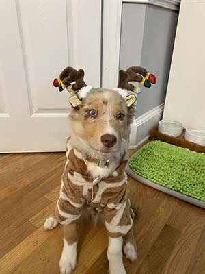
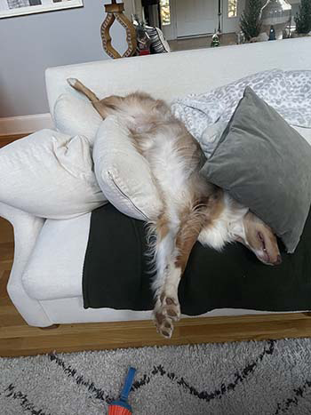
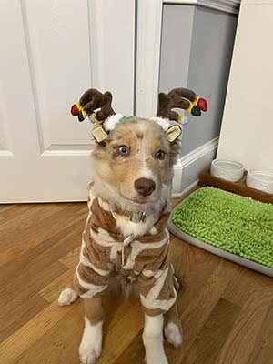
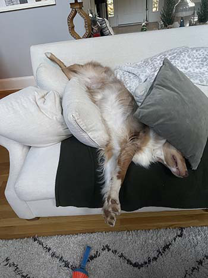
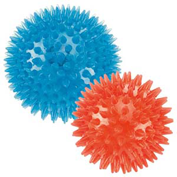
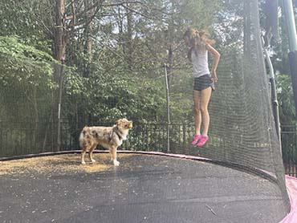

Finn is a red tri-merle australian shepard pup, he loves going on runs and giving snuggles. He has two different colored eyes, one blue and one green. His Birthday is July 12th and he's about 1 and a half years old. He plays with soccer and tennis ballls when he's not faaast alseep on the couch.
"One of the craziest dogs I've ever met!" -Many who have met Finn
Finn has a unique, hyper-active personality and cannot sit still! He is always moving and or chewing on something. He is scared of trucks, people, other dogs, and reallly anything un familiar. He is such a goofy dog and eats EVERYTHING! He once ate a whole bag of hershy kisses and right after that ate two chocolate chip cookies... He didn't even throw up after, he has a stomach made of steel! He does have his moments of peace, usually after a long walk or play session, where he sleeps for hours!

 

Favorite Toy |
Squeaky Balls- click here to buy! |  |
|---|---|---|
Favorite Activity |
Jumping on the trampoline! |  |
Favorite Friend |
His sister Lulu |  |
Favorite Treat |
Homemade bannana yogurt treats click here for the recipe! |  |
Favorite Weather |
Snow/Winter! Finn loves playing in the snow! |  |